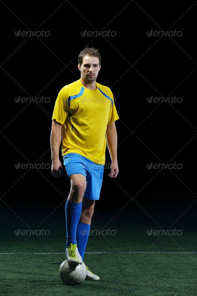
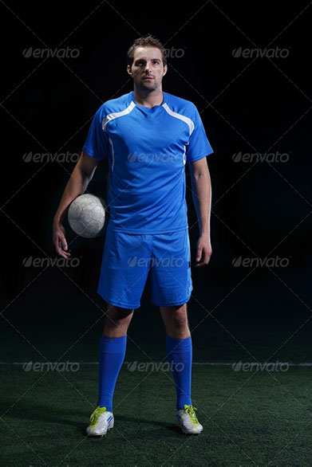
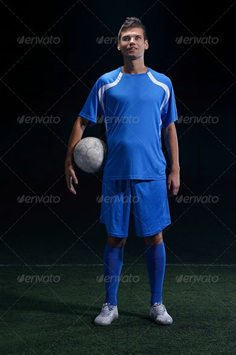
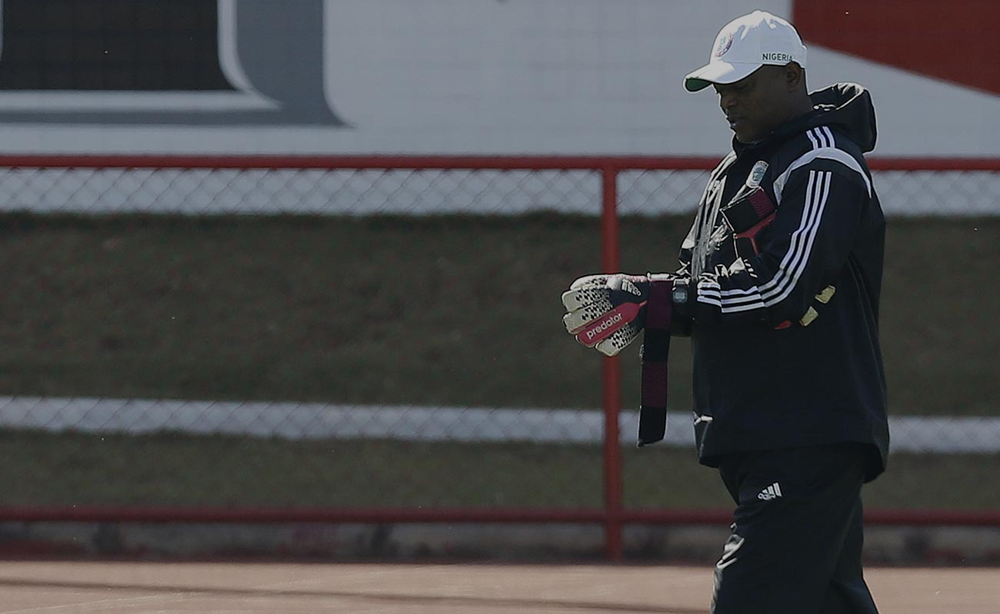
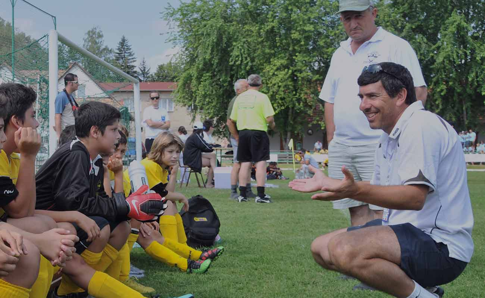

Neymar Jr
Qatar almost snatched victory in the final minutes of stoppage time when Mohammed Muntari burst clear of the defence only for a desperate cover tackle from Harold Cummings to clear the danger.

lionel messi
Lionel Andrés Messi is an Argentine professional footballer who plays as a forward or an attacking midfielder and captains the Argentina national team. He is currently a free agent, having

Cristiano Ronaldo
Central America and the Caribbean as part of their preparations for the 2022 World Cup, took the lead three times but were pegged back by the Panamanians. The game in Houston was delayed by nearly

Paulo Dybala
Arsenal manager Mikel Arteta says Bukayo Saka's "strong character" will help him ignore the racist abuse he suffered after England's Euro 2020 final defeat. Saka endured vile racist taunts on social

Mesut Ozil
Hopefully the laws will become stronger. I think we are all going to try and make a strong case out of that and hopefully, it can have a big impact because I think it is the moment to put that righ

Mauro Icardi
Asian champions Qatar were held to a 3-3 draw by Panama in their opening CONCACAF Gold Cup Group D game on Tuesday. Qatar, playing in the championship for teams from North America, Central America

Di Maria
Panama equalised in the 51st minute, with a cleverly worked move from a corner carving out an opening for Rolando Blackburn, whose accurate header flew into the bottom right hand corner

Kylian Mbappé
The game in Houston was delayed by nearly two hours after a severe weather warning. Qatar took the lead in the 48th minute, Akram Arif sweeping home emphatically from close range after Pedro Miguel headed.

Mohamed Salah
Marcus Rashford and Jadon Sancho also received abusive messages after failing to convert their penalties. But Arteta has spoken to Saka since the abuse and is confident the 19-year-old will not be affected.

Harry Kane
Arsenal manager Mikel Arteta says Bukayo Saka's "strong character" will help him ignore the racist abuse he suffered after England's Euro 2020 final defeat. Saka endured vile racist taunts on social media after missing.

Kevin De Bruyne
Arsenal manager Mikel Arteta said Bukayo Saka is "a strong character" and backed the player to ignore racist taunts after England's defeat in Euro 2020 final professional footballer who plays as an .

Philippe Coutinho
Philippe Coutinho Correia is a Brazilian professional footballer who plays as an attacking midfielder or winger for Spanish club Barcelona and the Brazil national team. He is known for his combination of vision.
All Highlights Copa America 2021
Amet minim mollit non deserunt ullamco est sit aliqua dolor do amet sint. Velit officia consequat duis enim velit mollit. Exercitation veniam consequat sunt nostrud amet.


christian ronald
CA Forwarder

Jadon Sancho
GKGoal Keeper

Toni Kroos
CBCenter Back

Memphis Depay
CMFRight Middle forward

Big Expectations
Essentially the equipment that is needed for a soccer match is pitch and a football. Players can be found wearing studded football boots, shin pads and matching strips. The goalkeepers will additionally padded gloves.

Mixed Impressions
The aim of football is to score more goals then your opponent in a 90 minute playing time frame. The match is split up into two halves of 45 minutes. After the first 45 minutes players will take a 15 minute rest period half time. .

The Greatest Stars
Football (Soccer) is one of the oldest sports in the world and that; it’s also one of the most recognised. The pinnacle of international game.To win you have to score more goals than that of your opponents.